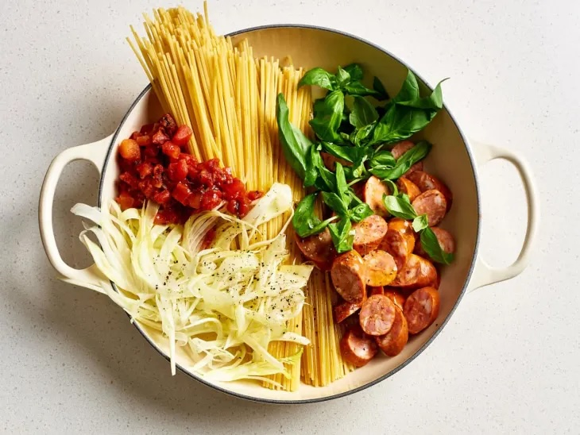

One-Pot Spicy Sausage Pasta

Description
This dish is a favorite of Nick's and was one of the first recipes he thought of as "his own." It's quick to put together and a delicious weekday meal.
My main recommendation is that the water in the recipe as shown on the website can be reduced for a more al dente pasta.
Ingredients
- 12 ounces smoked andouille sausage
- 1/2 medium fennel bulb
- 4 1/2 cups water
- 1 (14.5-ounce) can fire-roasted diced tomatoes
- 12 ounces dried linguine pasta
- 2 tablespoons olive oil
- 2 teaspoons kosher salt
- 1/2 teaspoon freshly ground black pepper
- 1 cup fresh basil leaves, plus more for garnish
Steps
- Cut 12 ounces andouille sausage crosswise into 1/2-inch thick rounds and thinly slice 1/2 medium fennel bulb.
Place both in a large, straight-sided skillet. Add 4 1/2 cups water, 1 can fire-roasted diced tomatoes and their juices,
12 ounces dried linguine, 2 tablespoons olive oil, 2 teaspoons kosher salt, and 1/2 teaspoon black pepper.
- Bring to a boil over high heat. Boil the mixture, stirring and turning the pasta with tongs to prevent sticking,
until the pasta is al dente and almost all the liquid has evaporated, 8 to 10 minutes. Meanwhile, tear 1 cup fresh basil
leaves in half. In the last 2 minutes of cooking, add the basil.
- Remove from the heat. Taste and season with more salt as needed. Garnish with more fresh basil.
Home